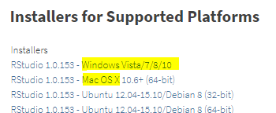

GitHub and GitLab and Bitbucket
Orchestrating with RStudio
To complete the hands-on portion of the workshop you’ll need software pre-installed. Due to the nature of the workshop we will not have time to troubleshoot installations during the workshop. Please be sure to perform the following steps on the laptop you bring to the workshop.
I recommend accepting the install defaults for the following:
Git: https://git-scm.com/downloads
R: http://archive.linux.duke.edu/cran/
RStudio: https://www.rstudio.com/products/rstudio/download/#download

If you haven’t yet, install each of the above applications.
During the workshop we will use Duke’s GitLab. To complete the hands-on portion of the workshop, you must log-in – in advance of the workshop – and ensure you have NetID access to https://gitlab.oit.duke.edu. If you do not have access to Duke’s GitLab, contact OIT.
I recommend generating your SSH keys in advance of the workshop, then add your public key to Duke’s GitLab. To do so, you should have already installed Git to your laptop.
Follow these instructions for generating and adding keys. We will cover key configuration in the workshop although you will find the explanation easier to follow if you generate your keys in advance.
To begin, open a shell from RStudio
Tools > Shell... Follow the instructions https://gitlab.oit.duke.edu/help/ssh/README
Close the Shell